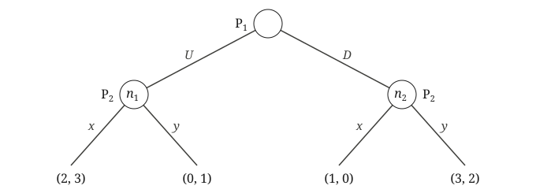

This exercise does not involve a repeated game. Consider the game in extensive form below, with payoffs listed as (Player 1, Player 2). Player 1 chooses \(U\) or \(D\text{,}\) and then Player 2 chooses \(x\) or \(y\text{.}\) In the tree, \(P_1\) and \(P_2\) mark which player moves at each node, and Player 2’s two nodes are labeled \(n_1\) (after \(U\)) and \(n_2\) (after \(D\)).

At the root, Player 1 chooses \(U\) or \(D\text{.}\) If Player 1 chooses \(U\text{,}\) Player 2 chooses at node \(n_1\text{:}\) \(x\) gives payoffs \((2, 3)\text{,}\) and \(y\) gives \((0, 1)\text{.}\) If Player 1 chooses \(D\text{,}\) Player 2 chooses at node \(n_2\text{:}\) \(x\) gives \((1, 0)\text{,}\) and \(y\) gives \((3, 2)\text{.}\)
Write Player 2’s strategies as two letters: the first letter is her move at \(n_1\text{,}\) and the second is her move at \(n_2\text{.}\) For example, \(xy\) means “play \(x\) at \(n_1\) and \(y\) at \(n_2\text{.}\)”
(a)
Write this game in normal form. Player 1 has two strategies, and Player 2 has four.
(b)
Show that \((U, xx)\) is a Nash equilibrium.
(c)
Decide whether \((U, xx)\) is a subgame perfect Nash equilibrium. For each subgame of this game:
-
write the normal form of the subgame (for the subgames at \(n_1\) and \(n_2\text{,}\) this is a smaller table than the one in part (a)),
-
box the outcome of \((U, xx)\) restricted to the subgame, and
-
say whether the restriction is a Nash equilibrium of the subgame, and why.
Hint.
The whole game is one subgame, and its table is the one from part (a). For the subgames at \(n_1\) and \(n_2\text{,}\) notice that there is no \(U\) or \(D\) in the table: Player 1 doesn’t move in these subgames, so Player 1 has no strategies there. Player 2 has two strategies, \(x\) and \(y\text{,}\) in both. So the tables look like this:
| Subgame at \(n_1\) | Player 2: \(x\) | Player 2: \(y\) |
|---|---|---|
| Payoffs |
| Subgame at \(n_2\) | Player 2: \(x\) | Player 2: \(y\) |
|---|---|---|
| Payoffs |
To box the outcome of \((U, xx)\) in each subgame, first decide: what does Player 2’s strategy \(xx\) correspond to in the subgame at \(n_1\text{?}\) In the subgame at \(n_2\text{?}\)
(d)
Use backward induction to find the subgame perfect Nash equilibrium of this game. Your answer should be a strategy for each player, not just the path the game takes: Player 2’s strategy needs to say what she does at both \(n_1\) and \(n_2\text{,}\) because Player 1’s choice depends on what Player 2 would do at either node, even the one that isn’t reached. Then compare its outcome with the outcome of \((U, xx)\text{.}\) Explain in words why Player 2’s plan at \(n_2\) in \((U, xx)\) is a threat, and who benefits from it. Why does the threat only work if Player 1 believes it?